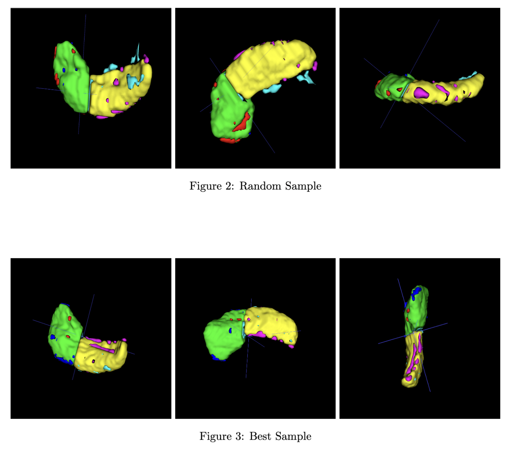

Hippocampus Segmentation
Segmenting the hippocampus from brain MRI scans
A medical imaging project exploring automatic hippocampus segmentation from T1-weighted MRI scans using deep learning. Worked with 3D MRI volumes and compared U-Net, Attention U-Net and nn-UNet architectures to learn pixel-level segmentation of the hippocampus.
Python · PyTorch · U-Net and variants · 3D MRI